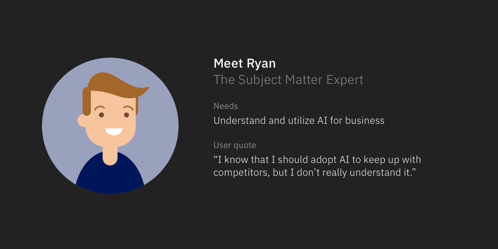
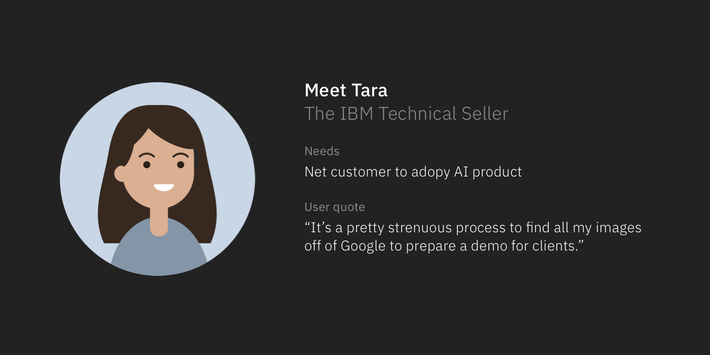
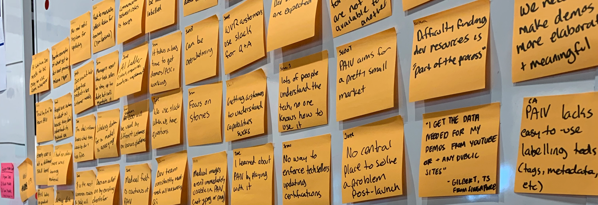
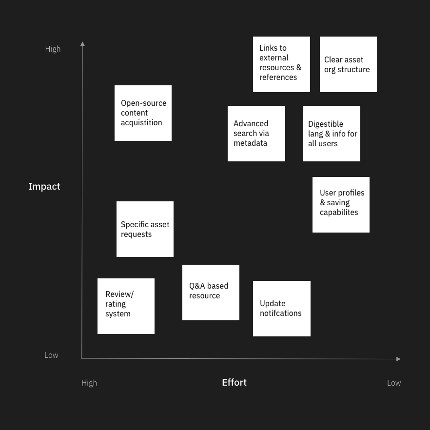
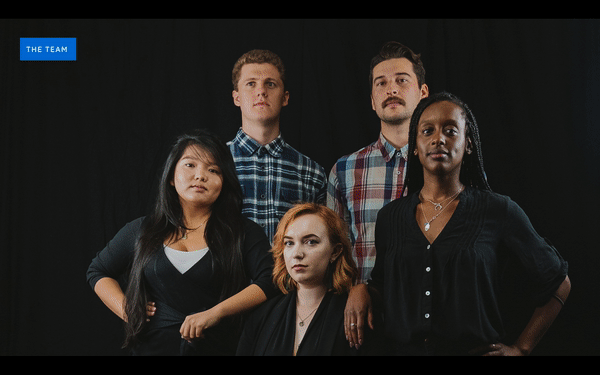
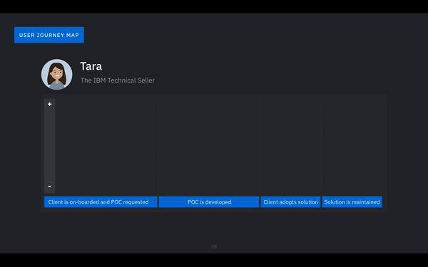

IBM Internship
Designed a repository housing AI solutions for IBM technical sellers & clients.
Overview
During the summer of 2019, me and 28 other interns participated in the Patterns Bootcamp at IBM’s Design Studio in Austin, TX. The internships' big focus is learning and applying IBM design thinking. During the internship, I teamed up with a set of multidisciplinary interns to design and pitch the AI Solution Go-Market.
Based on our design lead, the main goals of the internship were to deliver an exceptional solution, gain stakeholder buy-in and nail the final presentation.
Team:
1 visual designer, 1 UX researcher, 1 dev, 2 UX designers
Extended teams:CSMs, support, offering management
My role:Although my role was focused on UX design, I had the opportunity to lead the design of each weekly presentation which focused on storytelling. I also helped assist in running design thinking activities, usability tests, user interviews, and stakeholder calls. Lastly, I helped work on the UI/UX of the final solution.
Beginning with design thinkingThe week before starting the project, IBM’s design practices team taught us everything you could know about design thinking all in one week, it was like a pressure cooker of learning in a short time. So to start off the project we dived right into design thinking activities ranging from Assumptions and questions to building hills. These design thinking activities allowed us to come together as a team to form a research plan, ask the right questions to stakeholders, and develop a point of view on the problem.


Throughout the process our team conducted 31 user interviews with IBM internal employees along with IBM clients. These interviews provided us examples of stories from users running into the current problem we were trying to solve. Based on these interviews we developed personas that would guide us throughout our process and help construct a story for stakeholders later on.
  The underlying problemsDuring each user interview, we would jot down insights and user quotes. Altogether we gathered 136 insights that we organized through affinity mapping and extracted 4 insights about our user’s problems.
 4 insights were extracted from the 136 insights we gather during interviews. Insights:1. AI solutions are an impactful but very small part of a company’s workflow
2. It is difficult to access and utilize correctly formatted assets. This partially because there is no central place to do so.
3. Users are unable to access existing assets, resulting in loss of time and independence.
4. There is currently no process to measure the effectiveness of AI solutions
After defining the needs of our users, we started brainstorming features for our new solution on a prioritization grid to narrow down the best ideas. Due to the limited time we had with the internship (8 weeks) we narrowed down our feature list and designs fairly fast. If I had more time I would have liked to explore more broadly for a while then thoughtfully narrow down our features and sketch concepts.
 Top features to include in designs:
{kind=link}
{kind=link}
{kind=link}
{kind=link}
{kind=link}
{kind=link}
– Clear organizational structure
– Links to external resources and references
– Advanced search function through metadata
– Digestible language for users from all technical backgrounds
While sketching out concepts and presenting them to our lead we were able to ideate on other features that could benefit our users. Additional ideas included:
– AI solution “packs” (pages dedicated to a specific AI use case)
– Bookmarking
– Submission process
– Community forum (QA and discusses around specific AI use cases)
I helped with sketching the homepage and solution pack page. As I got feedback from our lead and users, I converted the concepts to a high fidelity. Once our team got to mid fidelity we conducted 16 usability tests across multiple users types.
Crafting the storyThroughout the internship we were required to present to our stakeholders on a weekly basis. At the beginning, our presentations were more of a report of the work we had done but as the weeks progressed we started crafting a story to get true stakeholder buy in. To craft the user's journey we used real stories and examples from our interviews. Mack, the other UX designer on your team, led the work on constructing the user journey map while I led the design for the story and final presentation.
Current experience:Let’s meet Tara, the IBM technical seller. Tara’s goal is to help her clients see the need for AI in their businesses and in turn have them adopte AI products into their workflow. She is often pitching the product and proof-of-concepts to clients to achieve her goal.
Let’s meet Ryan, the regional store manager for Coffee & co and he is what we can call a domain subject matter expert. Ryan has a deep understanding of Coffee & co and its recorded data but doesn’t know how AI could apply to his business. His goal is to adopt AI into his business but he doesn’t understand it.
Tara was just assigned a new client: Coffee & co. The client wants to analyze customer behavior in their retail store. Tara needs a few things she need to do from here:
– Find relevant use cases for client
– Find data set and/or trained model
– Prepare demo presentation for client
The problem begins here. Tara searches through Box to find a use case that applies to her client but only finds trained models that detect dogs and cats in images. She gets a slack to reach out to someone who might have relevant use cases and still nothing. After that she resorts to google for answers and starts searching for AI use cases and data sets for retail coffee shops. Throughout this process Tara becomes frustrated with nowhere to go to help serve her clients.
Pain point 1:No central place to find demos, trained models, data sets, and uses cases for technical sellers.
Tara ends up driving to a local coffee shop to take over 100 videos and photos to use a data set to build a proof-of-concept.
Her time is extremely precious because the more clients she can pitch to the more sales she can close. Although Tara was able to build a proof-of-concept for Coffee & Co, she had to spend hours and hours to prepare and probably missed time with other potential clients.
Now, let’s jump over to Ryan's story. Ryan’s boss just reached out to him and wants him to see how AI could help their business see what customers are doing in the retail stores. Ryan needs to do a few things from here:
– Find relevant use cases for client
– Find data set and/or trained model
– Prepare demo presentation for client
Ryan's search ends similar to Tara’s. He goes to Google and Youtube for help and finds nothing. All Ryan can do from here is reach out to Tara or support a support ticket for help.
Pain point 2:Ryan lacks the technical knowledge to understand AI tools and their relevance to his company as well as the ability to easily research that information autonomously.
The solutionNow let’s see how our solution can change Tara and Ryan’s journey.
Tara has the same goal of finding use cases, data sets and trained models for Coffee & co. This time she goes to a new resource called AI Solution Hub (AI Solution Go-Market). In this hub she searches for retail linger time to find resources for the client.
She narrows down her search by filtering by industry and IBM products.
She finds a lingering time ‘use case pack’ which has a trained model with example data sets along with presentations decks from past technical sellers.
As a result, Tara’s time searching for use cases related to her clients will be significantly reduced so now she can focus on other customers.
Ryan’s new experience is similar to Tara’s in that he finds answers to questions about AI and its application to business, he also finds use cases for his business. Now he can show to his boss for ways to better compete in the coffee market.
As a result Ryan’s experience with IBM products/services is improved by saved time and better use cases for his business.
Final presentationBefore this internship I have never used Keynote and didn’t have any experience pitching ideas to stakeholders at such a large company. As mentioned earlier one the main focuses of the internship was the final presentation. The final presentation was not only pitched to the project stakeholders but also open to anyone at IBM design studio in Austin. To wow the audience and really sell the story we had crafted, I included animations and motion throughout the presentation.
Introducing our team  Explaining the current experience User journey map  Earning stakeholder buy-in{kind=link}
{kind=link}
{kind=link}
After 7 weeks of the internship, our last week was the final presentation which typically helped stakeholders know if they should continue to fund certain projects. We got excellent feedback from our stakeholders which include product managers, program directors and VPs.
After 7 weeks of the internship, our last week was the final presentation which typically helped stakeholders know if they should continue to fund certain projects. We got excellent feedback from our stakeholders which include product managers, program directors and VPs.
Ask questions, ask questions, ask questionsAfter 7 weeks of the internship, our last week was the final presentation which typically helped stakeholders know if they should continue to fund certain projects. We got excellent feedback from our stakeholders which include product managers, program directors and VPs.
Post its are cliche but not design thinkingAfter 7 weeks of the internship, our last week was the final presentation which typically helped stakeholders know if they should continue to fund certain projects. We got excellent feedback from our stakeholders which include product managers, program directors and VPs.